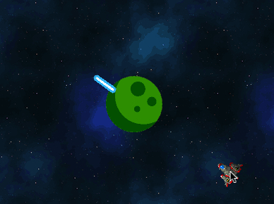

Ángulos y distancias
Pilas trae varias funciones para realizar cálculos geométricos sencillos, como obtener la distancia entre actores o incluso el ángulos entre ellos.
Ángulo entre actores o puntos
Un ejemplo práctico sería poder mirar en dirección a donde está el puntero del mouse: Observa uno de los ejemplos que trae pilas, el usuario puede mover el puntero del mouse y observar cómo el cañon ajusta su rotación correctamente:

Este ejemplo hace uso de la función obtener_angulo_entre_puntos así:
let x = actor_cañon.x;
let y = actor_cañon.x;
let cx = pilas.cursor_x;
let cy = pilas.cursor_y;
actor_cañon.rotacion = pilas.obtener_angulo_entre_puntos(x, y, cx, cy);La función obtener_angulo_entre_puntos espera que le enviemos 4 parámetros,
correspondientes a los dos puntos que nos interesan. El resutado de la función
es el ángulo en grados esperado.
También existe una función llamada obtener_angulo_entre_actores, que hace
algo muy similar, solamente que espera que le enviemos dos actores en lugar
de 4 números.
Un ejemplo que muestra esto es angulo-entre-actores, que nos muestra una
nave mirando constantemente al centro de la pantalla, donde está el actor
planeta:

Si observas el código, vas a encontrar una llamada a
obtener_angulo_entre_actores similar a la siguiente:
let nave = pilas.actores.nave();
let planeta = pilas.obtener_actor_por_nombre("planeta");
nave.rotacion = pilas.obtener_angulo_entre_actores(nave, planeta);Distancia entre puntos y actores
Otras dos funciones útiles en esta categoría son las funciones
obtener_distancia_entre_puntos y obtener_distancia_entre_actores. Ambas
reciben los argumentos de manera muy similar a las funciones de ángulos
anteriores. Aquí unos ejemplos:
let actor = pilas.actores.aceituna();
let cx = pilas.cursor_x;
let cy = pilas.cursor_y;
let distancia = pilas.obtener_distancia_entre_puntos(actor.x, actor.y, cx, cy);
actor.decir(`la distancia al mouse es ${distancia}`);o entre actores:
let actor = pilas.actores.aceituna();
actor.x = 100;
let nave = pilas.actores.nave();
let distancia = pilas.obtener_distancia_entre_actores(actor, nave);
nave.decir(`la distancia al otro actor es ${distancia}`);